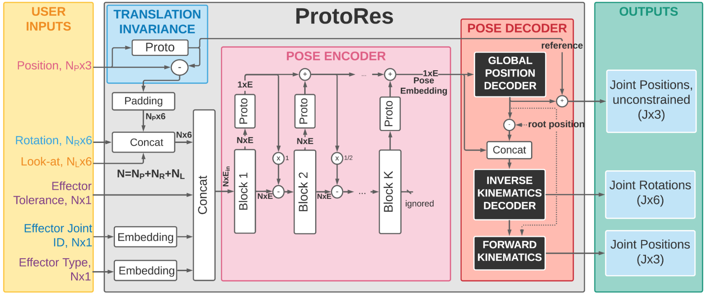

Introduction
Modeling human pose and learning pose representations have received increasing attention recently due to their prominence in applications, including computer graphics and animation, pose and motion estimation from video, immersive augmented reality, entertainment, sports and wellness, human machine interaction and autonomous driving. In the gaming industry, state-of-the-art real-time pose manipulation tools, such as CCD, FABRIK, or FinalIK, are popular for rapid execution and rely on forward and inverse kinematic models defined via non-learnable kinematic equations. While mathematically accurate, these non-learnable kinematic models do not guarantee that the underconstrained solutions derived from sparse constraints (e.g. positions of a subset of joints) result in plausible human poses. In contrast, more often than not sparse constraints give rise to perturbations of pose parameters that look unnatural even to the untrained eye. The main reason behind it is the lack of inductive bias to resolve an ill-posed problem of recovering the full pose from a small set of constraints.
This work focuses on the development of a learnable neural representation of human pose for advanced AI assisted animation tooling. Specifically, we tackle the problem of constructing a full static human pose based on sparse and variable user inputs (e.g. locations and/or orientations of a subset of body joints). To solve this problem, we propose a novel neural architecture named ProtoRes that combines residual connections with prototype encoding of a partially specified pose to create a new complete pose from the learned latent space.
We show that our architecture outperforms a baseline based on Transformer, both in terms of accuracy and computational efficiency. Additionally, we develop a user interface to integrate our neural model in the real-time 3D development platform Unity. Furthermore, we introduce two new datasets representing the static human pose modeling problem, based on high-quality human motion capture data, which will be released publicly along with model code.

Positional effectors can be manipulated to constrain the position of certain joints. On each update, ProtoRes generates a full body pose from the current effector states.

Rotational effectors allow users to control the global rotations of desired joints.

Look-at effectors can be positioned to align the orientation of a joint towards a target. Rotating a look-at effector also allows one to control the joint’s local axis to be aligned with that specific target.
Quickly authoring poses from silhouette images
We showcase below the few manipulations required by a novice user to create poses similar to the ones given as images as seen on the top-right of the scene view. Good poses are usually obtained in less than a minute.
Architecture
Our proposed architecture follows the encoder-decoder pattern and produces predictions in three steps. First, a variable number and type of user supplied inputs (effectors) are processed for translation invariance and embedded. Second, the architectural core, a proto-residual encoder, transforms the pose specified via effectors into a single vector (pose embedding). Finally, the pose decoder expands the pose embedding into the full-body pose representation including local rotation and global position of each joint.
See the paper for more details and more results.